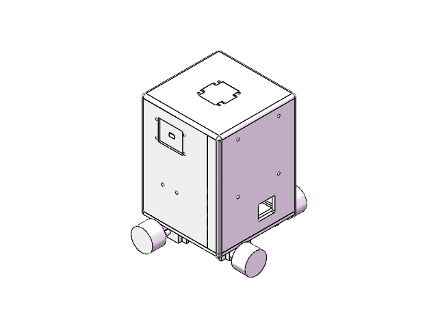

看见、测距、测量。
相机提供人脸位置与手势结果；超声模块检测前方距离；健康传感器读取接触式光学信号。
SENSE. MOVE. CARE.
拆开看，每个零件都有自己的任务。
组合在一起，是我们设计的移动健康机器人。

正在载入真实装配…EXPLORE THE DETAILS
相机提供人脸位置与手势结果；超声模块检测前方距离；健康传感器读取接触式光学信号。
主控结合控制模式、有效观测、姿态与停止条件决定输出。失去依据后，运动目标必须归零。
底盘、舵机与全向轮实现运动；屏幕与网页反馈状态。各功能的实体表现需以现场验收为准。